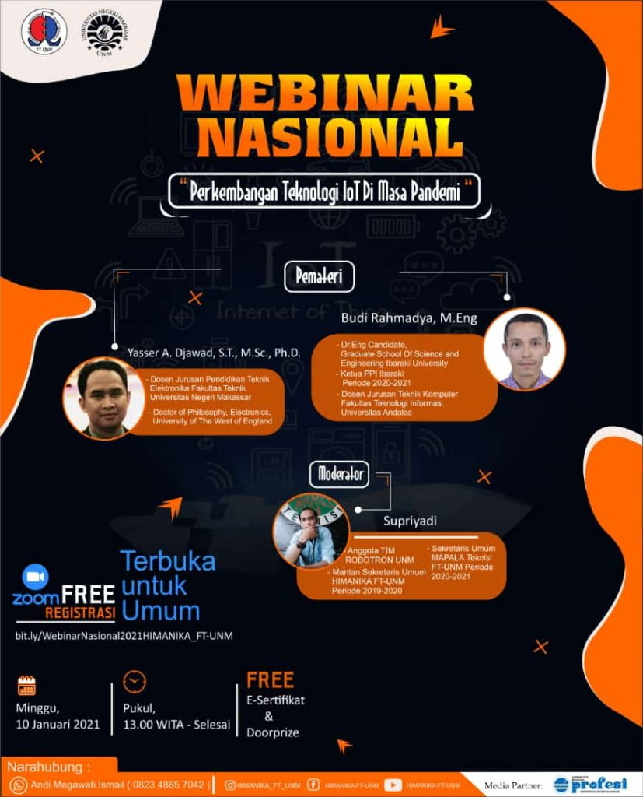

Deskripsi Event:

Perkembangan Teknologi di Masa Pandemi
“Melihat kondisi hari ini di tengah pandemi seperti ini iot banyak berperan penting dalam kerja masyarakat, contoh kecil dengan iot kita bisa kontrol kinerja mesin di pabrik artinya bagaimana produktivitas tetap jalan”
Webinar ini akan menghadirkan dua pemantik yang handal di bidangnya yaitu, Budi Rahmadya (Dosen Teknik Komputer Universitas Andalas) dan Yasser A. Djawad (Dosen Teknik Elektronika UNM).
Webinar ini bertujuan untuk memberikan pemahaman tentang teknologi iot ke masyarakat luas khususnya teman-teman mahasiswa di lingkup kampus UNM. Tercatat sampai hari ini jumlah peserta yang mendaftar sebanyak 395 peserta.
Haeruddin, Ketua Umum Himanika FT UNM mengungkapkan peranan teknologi iot sangat penting bagi masyarakat utamanya pada kondisi pandemi sekarang ini.
Salah satu perannya yaitu dapat membantu pekerjaan yang dulunya dilakukan secara manual namun dengan teknologi iot dapat dilakukan secara digital.
22 November 2021
90 Peserta
32 November 2021
Online